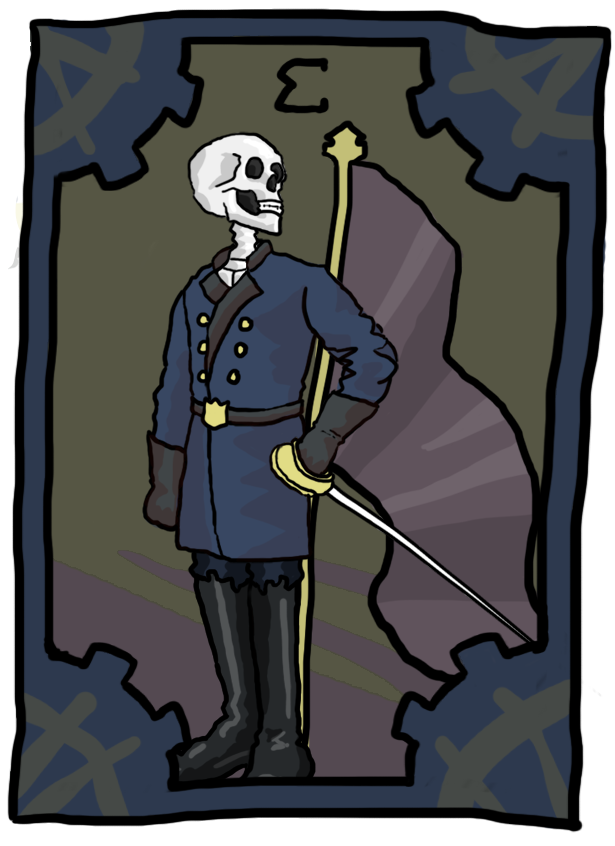
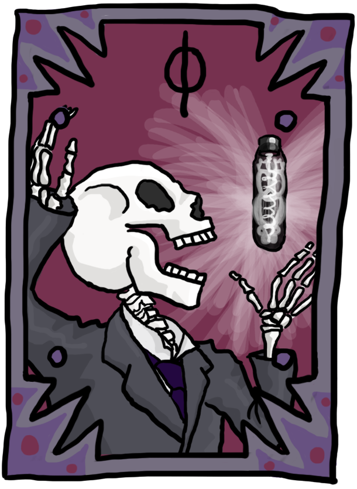
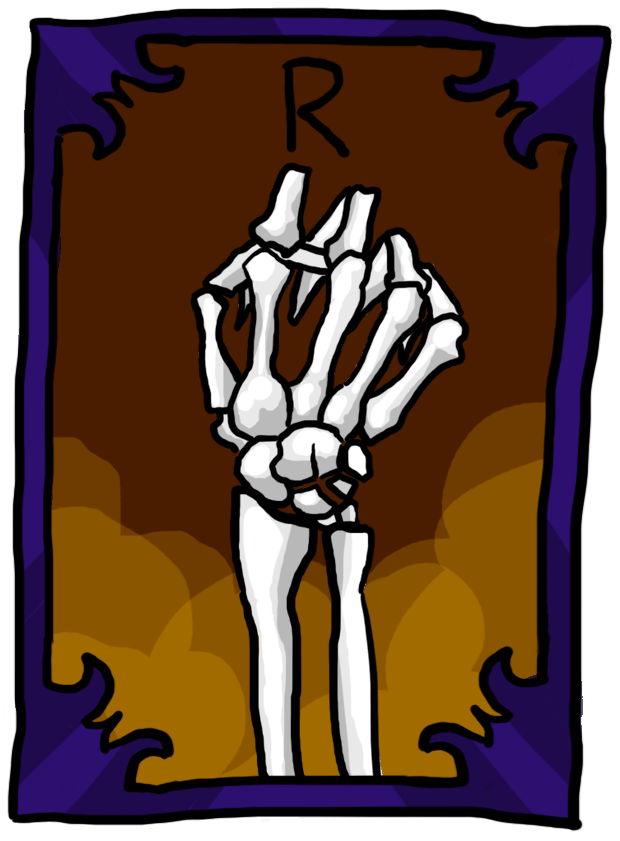
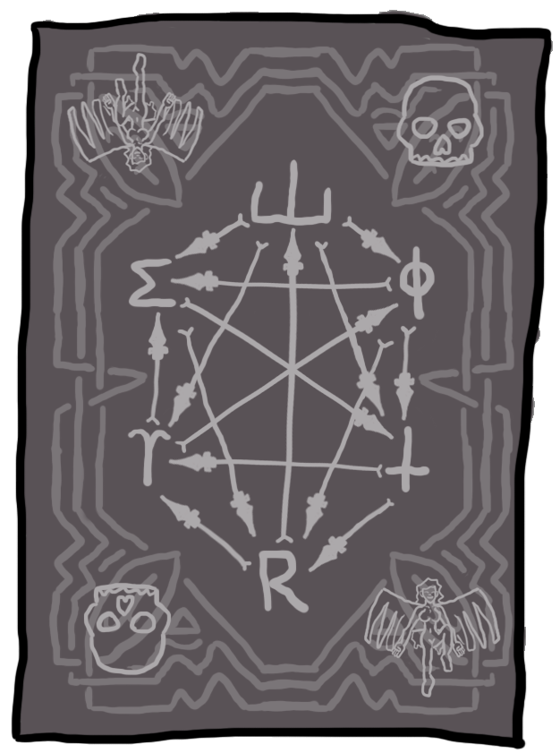
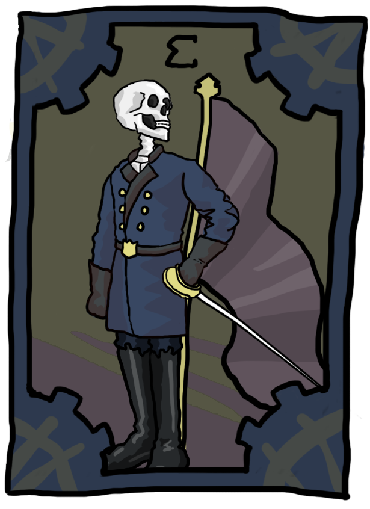
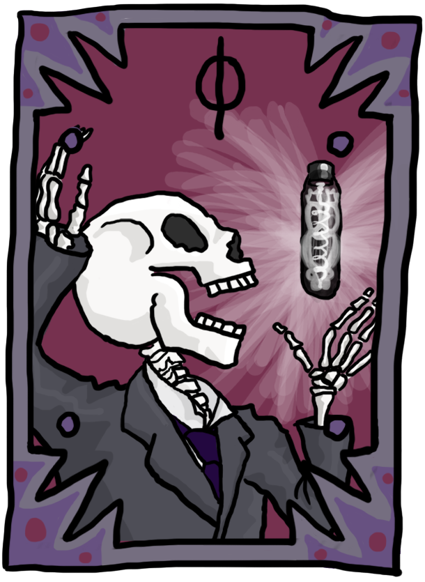
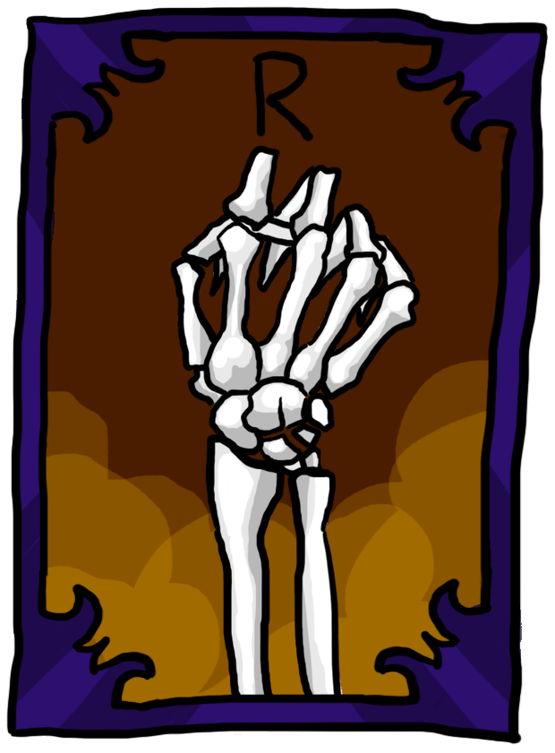
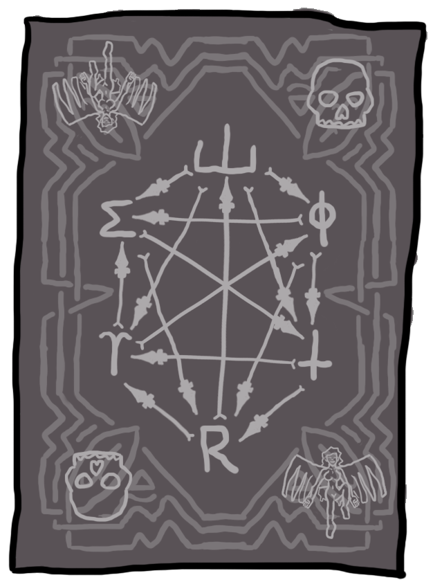

A digitally drawn animation of the transformation scene from the Strange Case of Dr. Jekyll and Mr. Hyde.
Brooklyn cityscapes I made for the promotional website for the show Heydays. Drawn in transparent layers to accomodate parallax scroll animation on the site.

 







Custom cards for the digital version of the game Arcos.